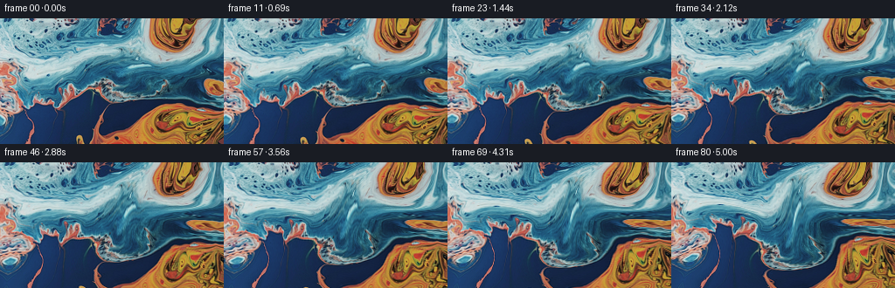
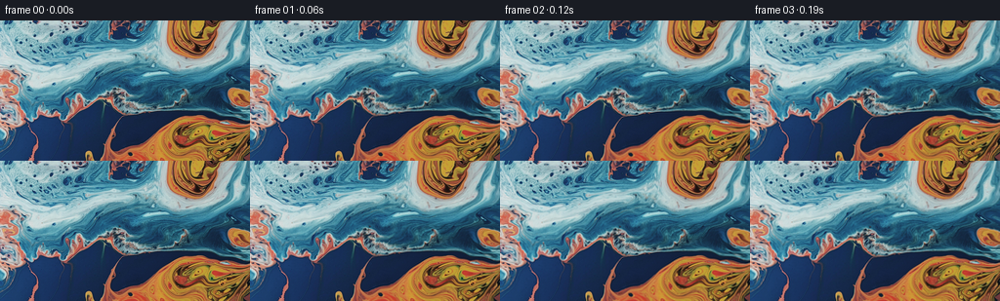

CODING AGENTS AS PIXEL WORLD MODELS
traex/GPT-5.6-Sol · 0000_s1
点击播放 · 原生 RGB 像素
逐轮保存的候选
回放视频、检查图与代码变化。
每份候选均可单独播放。实际图片检查记录在下方工具轨迹中。
候选 01播放与检查图
点击播放 · 原生 RGB 像素


展开代码变化
--- 上一保存版本
+++ 本次保存版本
@@ -0,0 +1,125 @@
+"""Generate a close-up animation of blue and orange liquid.
+
+The supplied image is treated as pigment already suspended in a shallow liquid.
+An analytic, divergence-free velocity field back-traces every output pixel to the
+first frame. This gives coherent curls and folds without progressively
+resampling (and blurring) the source image.
+"""
+
+from pathlib import Path
+
+import numpy as np
+from PIL import Image
+from scipy.ndimage import gaussian_filter, map_coordinates
+
+import artifact_io
+
+
+W, H = 256, 144
+N, FPS = 81, 16.0
+
+
+def velocity(x, y, t):
+ """A smooth incompressible-looking 2-D liquid velocity, in pixels/second."""
+ # A gentle horizontal shear makes the fluid slide in broad layers.
+ vx = 1.15 + 0.020 * (y - H * 0.50)
+ vy = -0.22 + 0.34 * np.sin((x - 18.0) * (2.0 * np.pi / 205.0) + 0.42 * t)
+
+ # Gaussian vortices. Their centers breathe slightly, avoiding mechanical
+ # rigid rotation while retaining temporal coherence.
+ vortices = (
+ (197.0 + 4.0 * np.sin(0.54 * t), 27.0 + 3.0 * np.cos(0.46 * t), 0.205, 51.0, 0.18),
+ (198.0 + 5.0 * np.cos(0.35 * t), 116.0 + 2.5 * np.sin(0.62 * t), -0.185, 70.0, 1.71),
+ (83.0 + 3.5 * np.sin(0.43 * t + 1.0), 83.0 + 4.0 * np.cos(0.38 * t), 0.140, 57.0, 3.02),
+ (18.0 + 2.0 * np.cos(0.50 * t), 76.0 + 5.0 * np.sin(0.31 * t), -0.115, 45.0, 4.11),
+ )
+ for cx, cy, omega, radius, phase in vortices:
+ dx, dy = x - cx, y - cy
+ envelope = np.exp(-(dx * dx + dy * dy) / (radius * radius))
+ strength = omega * (0.91 + 0.09 * np.sin(0.73 * t + phase)) * envelope
+ vx += -dy * strength
+ vy += dx * strength
+
+ # Small, broad cellular currents from a stream function. Taking crossed
+ # derivatives keeps this component divergence-free.
+ kx = 2.0 * np.pi / 150.0
+ ky = 2.0 * np.pi / 102.0
+ px = kx * x + 0.25 * np.sin(0.38 * t)
+ py = ky * y - 0.32 * np.sin(0.29 * t + 0.7)
+ amp = 45.0
+ vx += amp * ky * np.sin(px) * np.cos(py)
+ vy += -amp * kx * np.cos(px) * np.sin(py)
+ return vx, vy
+
+
+def backtrace(t, xx, yy):
+ """Trace target coordinates at time t back to their source at time zero."""
+ if t == 0.0:
+ return xx.copy(), yy.copy()
+ # Midpoint integration is accurate enough at eight steps per second, while
+ # direct-from-source sampling prevents cumulative interpolation damage.
+ steps = max(1, int(np.ceil(t * 8.0)))
+ dt = -t / steps
+ x, y = xx.copy(), yy.copy()
+ now = t
+ for _ in range(steps):
+ u1, v1 = velocity(x, y, now)
+ xm, ym = x + 0.5 * dt * u1, y + 0.5 * dt * v1
+ u2, v2 = velocity(xm, ym, now + 0.5 * dt)
+ x += dt * u2
+ y += dt * v2
+ now += dt
+ return x, y
+
+
+def sample_rgb(source, x, y):
+ coords = np.stack((y, x))
+ channels = [
+ map_coordinates(source[..., c], coords, order=3, mode="reflect", prefilter=True)
+ for c in range(3)
+ ]
+ return np.stack(channels, axis=-1)
+
+
+def generate():
+ root = Path(__file__).resolve().parent
+ original = np.asarray(Image.open(root / "first_frame.png").convert("RGB"), dtype=np.uint8)
+ if original.shape != (H, W, 3):
+ raise ValueError(f"Unexpected first-frame shape: {original.shape}")
+
+ source = original.astype(np.float32)
+ yy, xx = np.mgrid[0:H, 0:W].astype(np.float32)
+
+ # A low-frequency luminance map is used only for a very restrained moving
+ # refraction glint. It remains subordinate to the source's actual texture.
+ luminance = source @ np.array([0.2126, 0.7152, 0.0722], np.float32)
+ soft_detail = luminance - gaussian_filter(luminance, 4.2)
+
+ frames = np.empty((N, H, W, 3), dtype=np.uint8)
+ frames[0] = original # Contract: byte/pixel identical first frame.
+
+ for index in range(1, N):
+ t = index / FPS
+ sx, sy = backtrace(t, xx, yy)
+ frame = sample_rgb(source, sx, sy)
+
+ # Subtle moving illumination/refraction on the liquid surface. The
+ # temporal ramp makes the first transition especially gentle.
+ phase = (2.0 * np.pi * (0.0067 * sx + 0.0108 * sy)
+ + 0.74 * t + 0.22 * np.sin(0.51 * t))
+ caustic = np.sin(phase) + 0.42 * np.sin(1.73 * phase - 0.39 * t)
+ detail = map_coordinates(soft_detail, np.stack((sy, sx)), order=1,
+ mode="reflect", prefilter=False)
+ shimmer = (1.0 - np.exp(-2.2 * t)) * (0.75 * caustic + 0.012 * detail)
+ # Slightly cool highlights fit both blue and orange pigment without
+ # washing either color out.
+ frame += shimmer[..., None] * np.array([0.78, 0.94, 1.05], np.float32)
+
+ frames[index] = np.clip(np.rint(frame), 0, 255).astype(np.uint8)
+
+ return frames
+
+
+if __name__ == "__main__":
+ case_dir = Path(__file__).resolve().parent
+ artifact_io.save(generate(), case_dir)
可观测工具轨迹
实际执行的命令与返回图片。
命令 1exit 0
/bin/bash -lc "cat GENERATION_RULES.md && printf '\\n---PROMPT---\\n' && cat prompt.txt"
命令 2exit 1
/bin/bash -lc "find . -maxdepth 2 -type f -printf '%p\\n' | sort && printf '\\n---TOOLS---\\n' && command -v ffmpeg && python3 - <<'PY'
from PIL import Image
im=Image.open('first_frame.png')
print(im.mode, im.size)
PY"命令 3exit 0
/bin/bash -lc "cat task_spec.json && sed -n '1,240p' artifact_io.py"
命令 4exit 0
/bin/bash -lc "python3 - <<'PY'
from PIL import Image
import numpy as np
im=np.array(Image.open('first_frame.png').convert('RGB'))
print('shape',im.shape,im.dtype)
print('min',im.reshape(-1,3).min(0),'max',im.reshape(-1,3).max(0),'mean',im.reshape(-1,3).mean(0),'std',im.reshape(-1,3).std(0))
# sampled grid 12x20 print dominant compact symbols based HSV
import colorsys
h,w=im.shape[:2]
chars=[]
for y in np.linspace(0,h-1,12).astype(int):
row=''
for x in np.linspace(0,w-1,24).astype(int):
r,g,b=im[y,x]/255
hh,s,v=colorsys.rgb_to_hsv(r,g,b)
if v<.15:c='K'
elif s<.15:c='.'
elif hh<.08 or hh>.95:c='R'
elif hh<.17:c='O'
elif hh<.3:c='Y'
elif hh<.5:c='G'
elif hh<.72:c='B'
elif hh<.85:c='P'
else:c='M'
row+=c
print(row)
# cluster colors simple sklearn available?
try:
from sklearn.cluster import KMeans
X=im.reshape(-1,3)[::8]
km=KMeans(8,random_state=0,n_init=3).fit(X)
print('clusters')
for c,n in sorted(zip(km.cluster_centers_,np.bincount(km.labels_)),key=lambda z:-z[1]): print(n,np.round(c).astype(int))
except Exception as e: print(e)
PY"命令 5exit 0
/bin/bash -lc "python3 - <<'PY'
from PIL import Image
import numpy as np
from scipy import ndimage
im=np.array(Image.open('first_frame.png').convert('RGB')).astype(float)
r,g,b=im.transpose(2,0,1)
orange=(r-b>25)&(r-g>8)&(r>75)
blue=(b-r>15)&(b>45)
print('fractions',orange.mean(),blue.mean())
for name,m in [('orange',orange),('blue',blue)]:
lab,n=ndimage.label(m)
comps=[]
for i in range(1,n+1):
yy,xx=np.where(lab==i); s=len(xx)
if s>20: comps.append((s,round(xx.mean(),1),round(yy.mean(),1),[xx.min(),yy.min(),xx.max(),yy.max()]))
print(name, sorted(comps, reverse=True)[:15])
# blocks 16x12 orange and blue fractions
for m in [orange,blue]:
print('---')
for y in range(0,144,12):
print(' '.join(f'{m[y:y+12,x:x+16].mean()*9:.0f}' for x in range(0,256,16)))
# luminance block
lum=im.mean(2)
print('lum')
for y in range(0,144,12): print(' '.join(f'{lum[y:y+12,x:x+16].mean():3.0f}' for x in range(0,256,16)))
PY"命令 6exit 0
/bin/bash -lc 'python3 generate.py'
命令 7exit 127
/bin/bash -lc "python3 - <<'PY'
from PIL import Image
# create enlarged contact sheet useful for numeric/local inspection only
ims=[Image.open(f'frames/{i:02d}.png') for i in [0,10,20,30,40,50,60,70,80]]
out=Image.new('RGB',(768,432))
for k,im in enumerate(ims): out.paste(im,((k%3)*256,(k//3)*144))
out.save('.tmp/contact.png')
PY
file .tmp/contact.png inspection.png"命令 8exit 0
/bin/bash -lc "python3 - <<'PY'
import numpy as np
from PIL import Image
z=np.load('pixels.npz')['pixels']
print('packed',z.shape,z.dtype)
a=np.stack([np.array(Image.open(f'frames/{i:02d}.png')) for i in range(81)])
orig=np.array(Image.open('first_frame.png').convert('RGB'))
print('frames',a.shape,a.dtype,'first exact',np.array_equal(a[0],orig))
for i in [1,2,10,20,40,60,80]:
d=np.abs(a[i].astype(float)-a[i-1].astype(float))
d0=np.abs(a[i].astype(float)-a[0].astype(float))
print(i,'step mae',d.mean(),'step p95',np.percentile(d,95),'from0',d0.mean(),'mean',a[i].mean((0,1)))
PY
ls -lh pixels.npz index.html inspection.png transition_check.png frames/00.png frames/80.png"命令 9exit 0
/bin/bash -lc "python3 - <<'PY'
import numpy as np
from PIL import Image
from scipy.ndimage import sobel
ims=np.stack([np.asarray(Image.open(f'frames/{i:02d}.png')).astype(np.float32) for i in range(81)])
for i in [0,20,40,60,80]:
lum=ims[i]@np.array([.2126,.7152,.0722])
sharp=np.mean(np.hypot(sobel(lum,0),sobel(lum,1)))
clip=((ims[i]<=0)|(ims[i]>=255)).mean()
print(i,'sharpness',round(float(sharp),2),'clipped',round(float(clip),6))
# Verify temporal changes are distributed and no duplicate frames.
print('unique frame hashes',len({hash(x.tobytes()) for x in ims.astype(np.uint8)}))
print('motion pixel fractions min/max',min(np.mean(np.any(ims[i]"'!=ims[i-1],2)) for i in range(1,81)),max(np.mean(np.any(ims[i]!=ims[i-1],2)) for i in range(1,81)))
PY'保存候选 1 份；完成命令 9 次；可验证图片返回 0 张。原始 API 响应与完整日志保留在本地。